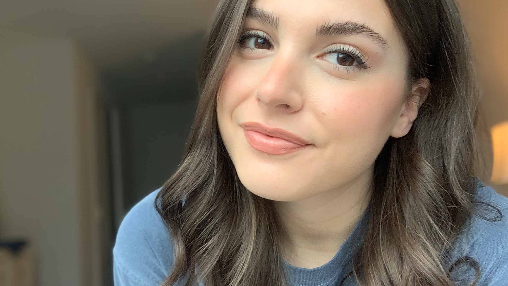
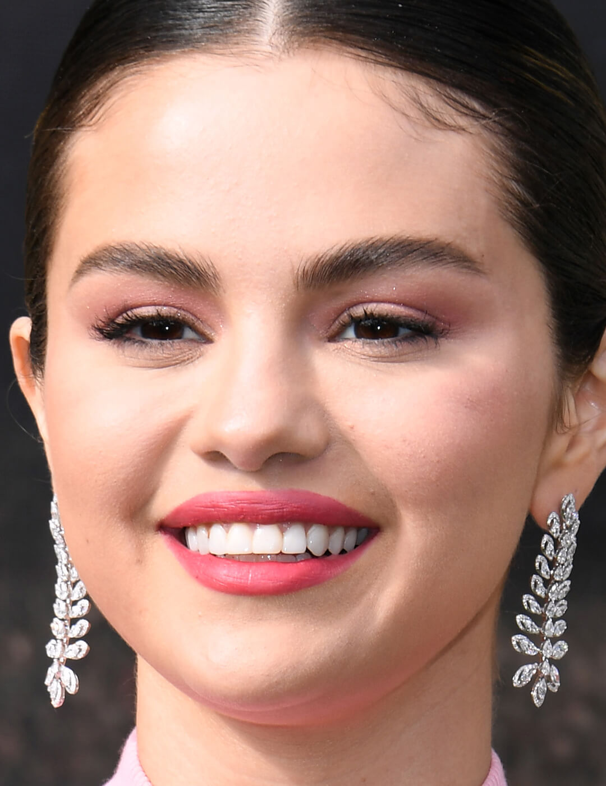

Before begin applying your makeup, we give the time to prep your skin with a high-quality moisturizer. Choosing the right kind of moisturizer is a crucial piece of the puzzle
STEP 2: PRIMER
primer is an important first step. Using primer under your makeup will make your look last longer.
STEP 3: LIQUID FOUNDATION
When it comes to foundation, finding the perfect shade for your skin is priority number one. The right shade of foundation can make all the difference.

STEP 4: CONCEALER
Best for the times you want light coverage over a large area of your face. Liquid concealer also works well for those looking to create a light finish, especially in areas of wrinkles, like around the eyes and mouth.
STEP 5: FOUNDATION POWDER
If you have oily skin, powder foundation might be your best bet as they are excellent at absorbing and controlling excess oil.
STEP 6: BRONZER
Bronzer can give your skin that sun-kissed glow all year long.

STEP 7: BLUSH
Flushed cheeks have been a mainstay of makeup glamour for centuries. If you want to add a bit more color and vibrancy to your complexion, blush may be the key. Use a dense brush with plenty of bristles to apply your blush—this will make sure you get the most out of every blush sweep.
STEP 8: HIGHLIGHTER
Highlighter is a makeup product that is used to add a subtle glow to the face.The right highlighter adds a bit of glam and glow to every makeup look. Whether you're opting for a more natural look or want something bold and beautiful, highlighter can complement your makeup application.It is usually applied to the cheekbones, brow bones, and the bridge of the nose.
STEP 9: EYESHADOW
Eyeshadow can add interest to your makeup look, whether you opt for neutral shades or go bold with colorful hues. . It makes the wearer's eyes stand out or look more attractive.
STEP 10: EYELINER
Eye liner is a cosmetic used to define the eyes. It is applied around the contours of the eye to create a variety of effects, including cat eyes, thick lines, thin lines, and more.
STEP 11: MASCARA
Mascara will add darken and thicken eyelashes in your look. It may also thicken, lengthen, curl, and/or define the eyelashes.mascara can make your eyes look brighter in a single step
STEP 12: LIP GLOSS
Lip gloss is a cosmetic product used primarily to give lips a glossy, wet look and to add color to the lips. It is often used to give a subtle sheen to the lips.
STEP 13: SETTING SPRAY & SETTING POWDER
Setting spray or setting powder can be the final touch for your makeup routine. If you want makeup that stays on all day long, without greasing, creasing, or shine, it's important to invest in a quality setting solution.